Propriedade rural de 205 hectares localizada em Caldas, Sul de Minas Gerais. Altitude acima de 1.400 m — aptidão para culturas de alto valor agregado e grãos.
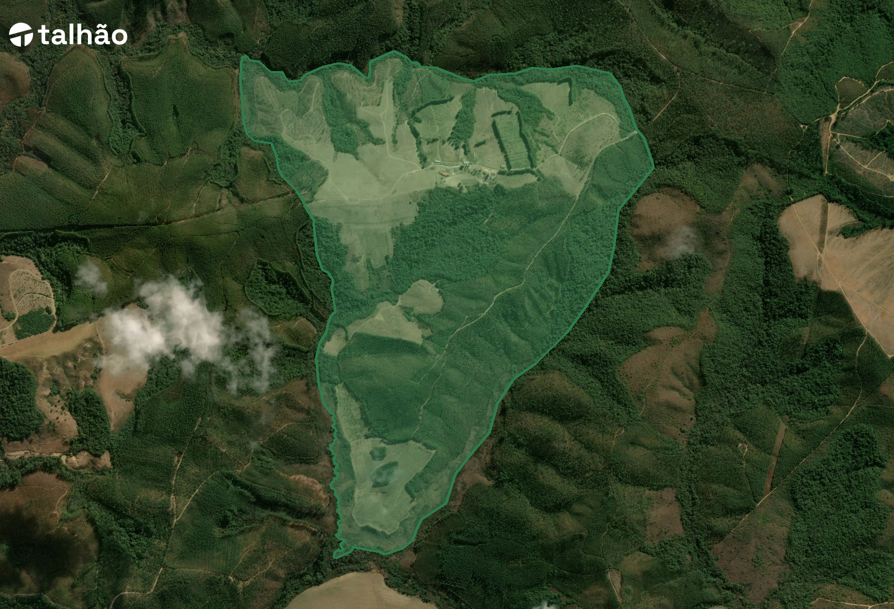
| Nome do Imóvel | Fazenda Três Barras |
| Código SIGEF | 9500849473501 |
| Matrícula | 8.389 |
| Município | Caldas |
| UF | Minas Gerais |
| Coordenadas (centroide) | 21°55'19"S / 46°23'14"W |
| Área Total SIGEF | 205,0 ha |
| Área Aproveitável | 157,2 ha (76,4%) |
| APP + Reserva Legal | 48,5 ha (23,6%) |
| Datum | SIRGAS 2000 |
| CAR | MG-3110301-5B0D… |
| CAR atualizado em | 22/04/2025 |
| Preço Pedido | R$ 9.840.000 |
| Preço por Hectare | R$ 48.000 / ha |
| Corretor | João Luiz — CRECI 35687 |
| Contato | +55 35 9914-9427 |
| Situação | Apta para Venda |
A Fazenda Três Barras está inserida na Região Vulcânica do Sul de Minas, entre Poços de Caldas, Caldas e Andradas — território com 12 municípios reconhecido pela produção de culturas de alto valor agregado, como frutas, flores, café especial e viticultura.
| Caldas (centro urbano) | 13,2 km — 25 min |
| Andradas (polo agrícola) | 23,8 km — 35 min |
| Poços de Caldas | ~40 km — 50 min |
| São Paulo (capital) | 235 km — ~3h30 |
| Rodovia principal (BR-146) | 13,7 km — 25 min |
| Rodovia Federal | BR-146 — Ótimo estado |
| Tipo de acesso | 100% asfalto — dois caminhos |
| Pedágio | Sem pedágio na rota |
| Estradas internas | 2,5 km (terra compactada) |
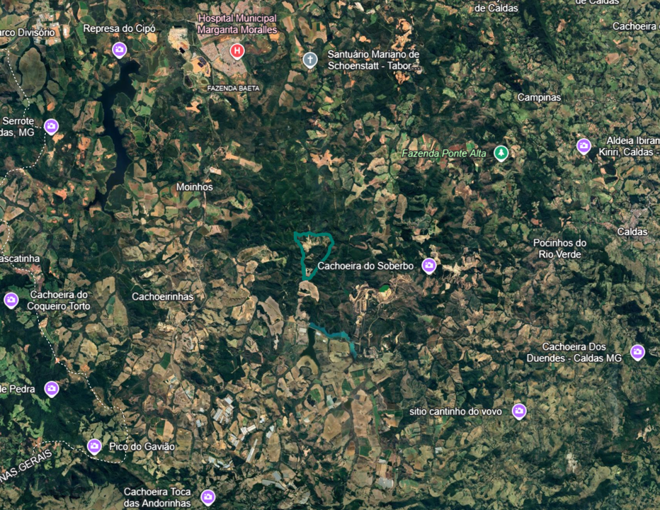
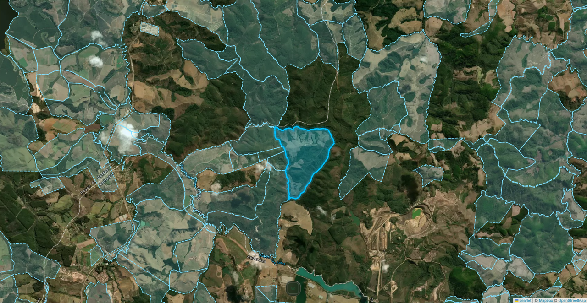
| Área SIGEF | 205,0 ha |
| Código SIGEF | 9500849473501 |
| Status SIGEF | Certificado |
| Datum | SIRGAS 2000 |
| Data atualização | 22/04/2022 |
| Leste / Oeste | 2 córregos nas divisas |
| Interior | 1 nascente dentro da propriedade |
| Vizinhança | Propriedades com eucalipto |
Fazenda georreferenciada e certificada pelo INCRA. Sem sobreposições detectadas com imóveis vizinhos. Arquivos KML, matrícula, CCIR e ITR disponíveis para download no dossiê técnico.
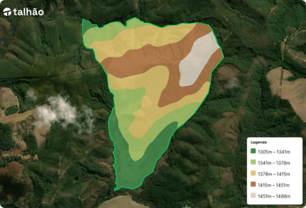
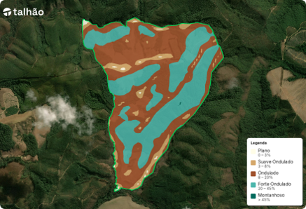
| Tipo dominante | Ondulado |
| Declividade faixa | 8–20% |
| Declividade média | 19% |
| Áreas críticas (>20%) | ~30% da área |
Altitude média superior a 1.400 m proporciona implantação de culturas tanto temporárias quanto perenes de alto valor, com amplitude térmica que favorece qualidade sensorial dos produtos.
Histórico de pelo menos 10 anos de cultivos temporários consolida o potencial de transformação das áreas em silvicultura, cultivos permanentes ou temporários de maior valor agregado. Nenhum desmatamento ilegal detectado em toda série histórica (PRODES/INPE).
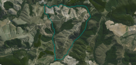
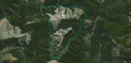
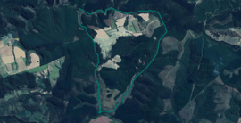
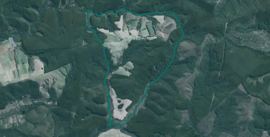
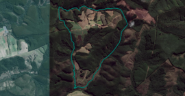
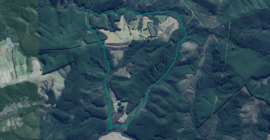
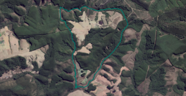
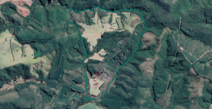
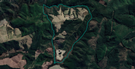
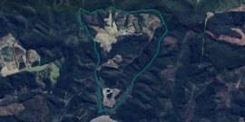
| Avocado (Abacate Hass) | Alta Aptidão |
| Café Arábica Especial | Alta Aptidão — ZARC 2021 |
| Viticultura (Uva fina) | Alta Aptidão |
| Fruticultura temperada | Alta Aptidão |
| Flores e plantas ornamentais | Alta Aptidão |
| Grãos (milho, soja) | Aptidão Regular |
| Eucalipto / Silvicultura | Alta Aptidão |
| Café Arábica | Favorável — ZARC reinserido 2021 |
| Temperatura média anual | 18–22°C |
| Precipitação anual | 1.000–1.500 mm |
| Altitude média | 1.391 m (favorável especial) |
A altitude acima de 1.400 m combinada com o solo de origem vulcânica e a amplitude térmica regional posiciona a fazenda para culturas premium de alto valor agregado — avocado e viticultura têm demanda crescente em mercados nacionais e de exportação.
| Ordem / Subordem | Cambissolo Háplico |
| Atividade argila | Tb — Baixa atividade |
| Saturação de bases | Distrófico (V < 50%) |
| Textura | Muito argilosa (>60% argila) |
| Horizonte A | Moderado e proeminente |
| Saturação Al³⁺ | Álico — atenção |
Solo álico com alta saturação por Al³⁺. Requer calagem criteriosa antes da implantação de qualquer lavoura. Análise atualizada não disponível — recomendada antes da aquisição.
| Análise de solo | Necessária (múltiplos pontos) |
| Calagem | Provável — solo distrófico |
| Adubação fosfatada | A confirmar por análise |
| Custo estimado correção | R$ 1.500–3.000/ha |
| Ponto 1 — Córrego divisa | |
| Vazão medida | 0,006 m³/s (6 L/s) |
| Disponível p/ outorga | 0,003 m³/s (3 L/s) |
| Ponto 2 — Córrego divisa | |
| Vazão medida | 0,014 m³/s (14 L/s) |
| Disponível p/ outorga | 0,007 m³/s (7 L/s) |
| Total outorgável | 0,010 m³/s |
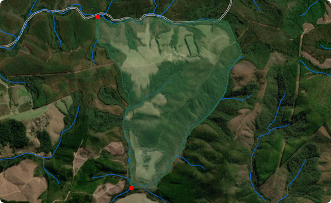
A disponibilidade hídrica confirmada pelo IGAM é um ponto forte relevante. A fazenda tem potencial para irrigar toda a área aproveitável, o que amplia significativamente as opções de cultivo e reduz o risco climático.
| Início da estação chuvosa | Outubro |
| Meses chuvosos | Outubro — Março |
| Meses secos | Abril — Setembro |
| Maior precipitação | Janeiro (349 mm) |
| Menor precipitação | Julho (32 mm) |
Precipitação média anual superior a 1.650 mm permite cultivos sem irrigação nas culturas adequadas. A grande amplitude térmica (mín. 11°C / máx. 27°C) é diferencial para qualidade de frutas, uvas e café.
| Nível de risco | Médio-Alto |
| Meses críticos | Junho, Julho, Agosto |
| Ocorrência | Anual — inverno |
| Recorde histórico | -5°C em Jul/1994 |
| Nível de risco | Médio |
| Meses secos | Abril — Setembro |
| Evento histórico | Estiagem 2014–2015 |
| Impacto estimado | -20 a 30% produtividade |
| Nível de risco | Alto — atenção |
| Meses críticos | Ago–Set e Out–Nov |
| Evento recente | Agosto/2020 — intenso |
| Culturas mais afetadas | Frutas, uvas, flores |
| Número CAR | MG-3110301-5B0D…2347 |
| Status | Certificado |
| Data inscrição | 24/05/2016 |
| Última retificação | 04/08/2022 |
| Invasão de APP | Não detectada |
| Passivo ambiental | Nenhum |
| Tipo predominante | Rios e nascentes |
| Área total APP | ~40 ha |
| Situação | Preservada |
| Desmatamento após 2008 | Não identificado |
Toda área desmatada ocorreu antes de 2008, conforme histórico de imagens de satélite. A fazenda está em plena conformidade com o Código Florestal Brasileiro, sem qualquer passivo a regularizar.
| Número | MG-3110301-5B0D…2347 |
| Status análise | Ativo — Certificado |
| Data inscrição | 24/05/2016 |
| Última retificação | 04/08/2022 |
| Passivo de APP | Nenhum |
| Passivo de RL | Isento — compensação desnecessária |
| Desmatamento ilegal | Não identificado |
| Embargo IBAMA/IEF | Sem embargos |
| Sobreposição UC/TI | Não detectada |
| Número | 8.389 |
| Ônus / Gravame | Livre e Desembaraçado |
| SIGEF Status | Certificado |
| Fonte principal das áreas | Arquivo KML oficial |
| Diferença relevante de área | Não identificada |
| Georreferenciado INCRA | Sim — agiliza transferência |
| Análise histórica 20 anos | Não foi possível realizar |
| Levantamento topográfico | 29/04/2026 |
A análise da cadeia dominial dos últimos 20 anos não foi possível de realizar neste relatório. Recomendamos solicitar certidão vintenária ao cartório antes da aquisição.
| Sede | 1 unidade |
| Galpão para implementos | 1 unidade |
| Curral | 1 unidade |
| Outras benfeitorias relevantes | Não identificadas |
| Estradas internas | 2,5 km — terra compactada |
| Tipo de revestimento | Terra |
| Condição | Simples — manutenção básica |
A fazenda possui infraestrutura básica instalada — sede, galpão e curral — adequada para compradores que já possuam operação próxima ou que desejem iniciar projeto do zero com liberdade de planejamento.
| Energia trifásica (extensão) | R$ 40–80 mil |
| Sistema de irrigação (básico) | R$ 200–400 mil |
| Reservatório de água (50 mil m³) | R$ 150–250 mil |
| Correção de solo (total área) | R$ 200–400 mil |
| Implantação de lavoura (110 ha) | R$ 1,5–3,0 M |
| Total estimado operação | R$ 2,1–4,1 M |
| Rodovia Federal | BR-146 |
| Condição | Boa — mantida pelo DNIT |
| Pedágio | Sem pedágio |
| Alternativas de acesso | 2 caminhos diferentes |
| Trecho de terra | Não há — 100% asfalto |
| São Paulo (centro consumidor) | 235 km — rodoviário |
| Andradas (atacado/flores) | 23,8 km |
| Poços de Caldas | ~40 km |
| Modal principal | Rodoviário |
| Assistência técnica (EMATER) | Caldas — 13 km |
| Cooperativas agrícolas | Andradas e Caldas |
| Hospital referência | Caldas e Poços de Caldas |
Caldas é a maior produtora de uvas do Sul de Minas e a 3ª maior do estado, com produção recorde de 1.625 toneladas (2015). Conta com o Núcleo Tecnológico EPAMIG Uva e Vinho, que desenvolve pesquisas e produz mudas.
| Posição estadual | 3ª maior produtora de uvas |
| Centro de pesquisa | EPAMIG Uva e Vinho |
| Altitude favorável | > 1.400 m |
Caldas integra a Região Vulcânica do Café — território com 12 municípios que produz cafés de qualidade superior pelo solo rico em minerais. O município foi reinserido no ZARC para café arábica em 2021, garantindo acesso a crédito rural e seguro agrícola.
| Leite (produção diária) | ~24.000 litros |
| Pequenos produtores | 300 produtores de leite |
| Mel | 1.000 t produzidas (2010) |
A região é reconhecida pela ocorrência de terras raras, com empresas como a Meteoric Resources operando próximo à fazenda. Solo de origem vulcânica com riqueza mineral diferenciada.
| Municípios no polo | 12 municípios |
| Mineração próxima | Meteoric Resources |
| Solo | Origem vulcânica — minerais |
| Expansão agrícola | Forte crescimento regional |
| Avocado Hass (110 ha) | Viável imediato |
| Viticultura (30–50 ha) | Alta aptidão — apoio EPAMIG |
| Café arábica especial (50 ha) | ZARC aprovado desde 2021 |
| Grãos temporários (110 ha) | Viável com correção de solo |
| Eucalipto manutenção (47 ha) | Já presente — manter/reconverter |
| Turismo rural / enoturismo | Região favorável |
| Avocado (110 ha, mudas + infra) | R$ 2,2–3,3 M |
| Viticultura (40 ha, completo) | R$ 1,2–2,0 M |
| Café arábica (50 ha) | R$ 700k–1,0 M |
| Irrigação completa | R$ 300–500k |
Estimativa para avocado Hass em 110 ha. Produção plena a partir do ano 7. Preço médio R$ 3,50/kg, produtividade 10 t/ha.
A flexibilidade de uso é o grande diferencial da Fazenda Três Barras — o comprador tem liberdade total para escolher a cultura mais aderente à sua tese de investimento, sem restrições fundiárias ou ambientais.
| Valor total | R$ 9.840.000 |
| Por hectare total | R$ 48.000 / ha |
| Por hectare aproveitável | R$ 62.700 / ha |
| Por hectare agrícola | R$ 89.500 / ha |
| Terra nua (205 ha × R$40k) | R$ 8.200.000 |
| Benfeitorias (sede, galpão, curral) | R$ 500.000 |
| Estradas internas e acessos | R$ 80.000 |
| Eucalipto existente (~47 ha) | R$ 470.000 |
| Prêmio localização / altitude | R$ 590.000 |
| Total estimado | R$ 9.840.000 |
O preço pedido de R$ 48.000/ha está compatível com o mercado para propriedades de altitude na Região Vulcânica de Caldas-Andradas. A altitude acima de 1.400 m, documentação regular e localização próxima a São Paulo justificam o patamar de precificação.
| Operador com experiência | Máxima eficiência |
| Investidor de capital | Projeto do zero — mais flex. |
| Operação próxima | Complemento de área |
| Score de risco geral | Médio — infraestrutura a implantar |
A Fazenda Três Barras reúne os atributos essenciais para um projeto agrícola de alto valor: altitude acima de 1.400 m, documentação irrepreensível, aptidão para culturas premium e logística favorável. A ausência de infraestrutura avançada representa oportunidade de personalização para o perfil do comprador.
Matrícula, CCIR, ITR, CAR (download), arquivo KML, demarcação SIGEF e mais de 15 documentos disponíveis para due diligence completa.
| Telefone / WhatsApp | +55 35 9914-9427 |
| Especialidade | Imóveis rurais Sul de Minas |
Empresa especializada em coleta, organização e disponibilização de dados técnicos sobre imóveis rurais. Relatório gerado em 29/04/2026.
Este relatório tem caráter exclusivamente informativo. Os dados não substituem due diligence legal, ambiental, agronômica ou financeira conduzida por profissionais habilitados. Valores são estimativos. Base: Abril/2026.